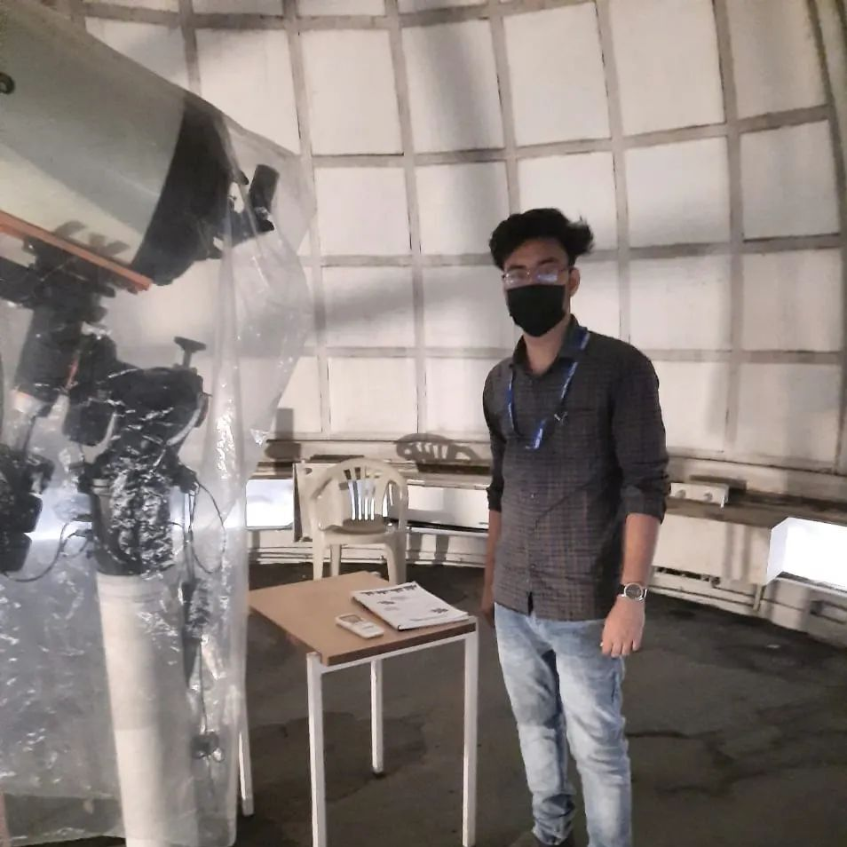

The cosmos, you see, is my classroom, and the stars are my professors.
I’m more stardust than starched collar. When the night sky unfurls its velvet canvas, I step outside. There, under the watchful gaze of Orion and Cassiopeia, I lose myself. I ponder the vastness—the infinity of it all. Is there a hidden verse in the cosmic hymn? A note yet unsung?
And so, armed with curiosity, I stargaze. I sip nebulae like cosmic tea, savoring their flavors—hints of hydrogen, whispers of helium. I wonder about wormholes and black holes, those enigmatic doorways to other realms. Could they lead to parallel universes where quarks jitter differently, and time pirouettes backward?
Academics, you ask? Ah, yes! My earthly tether.
I’m more stardust than starched collar. When the night sky unfurls its velvet canvas, I step outside. There, under the watchful gaze of Orion and Cassiopeia, I lose myself. I ponder the vastness—the infinity of it all. Is there a hidden verse in the cosmic hymn? A note yet unsung?
And so, armed with curiosity, I stargaze. I sip nebulae like cosmic tea, savoring their flavors—hints of hydrogen, whispers of helium. I wonder about wormholes and black holes, those enigmatic doorways to other realms. Could they lead to parallel universes where quarks jitter differently, and time pirouettes backward?
Academics, you ask? Ah, yes! My earthly tether.I have joined Ph.D. programme in Nuclear Astrophysics at Bose Institute, Kolkata from the hallowed halls of curiosity itself. I am currently working on Early universe nucleosynthesis.
Postgraduation
MSc. Physics (Astrophysics)
St. Xavier's College (Autonomous), Kolkata
Graduated: 2022
Graduation
BSc. Physics (H)
Bangabasi College,University of Calcutta
Graduated: 2020